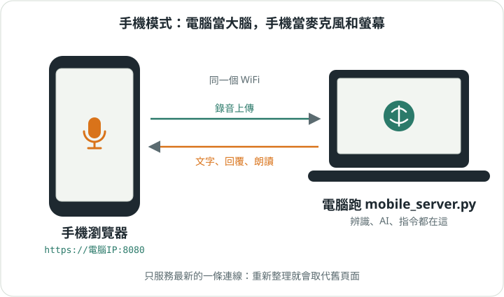

第 05 章
用手機
電腦當大腦，手機當麥克風和螢幕。

怎麼開
- 電腦上執行
.venv/bin/python mobile_server.py。 - 終端機會印出網址，像
https://192.168.x.x:8080。 - 手機連同一個 WiFi，用瀏覽器打開它。
- 看到「連線不安全」：點「進階」→「繼續前往」。憑證是電腦自己簽的。
小提醒 手機瀏覽器只讓 https 網頁用麥克風，所以 [MOBILE] ssl 請開著。
和電腦版一樣
同一個大腦：托盤、指令、回覆文字都一樣，說的話只進「現在這一個」托盤。/copy、/paste 用手機的剪貼簿。
不一樣的地方
- 沒有 F 鍵，錄音用畫面按鈕，所以沒有「用嘴巴下指令」模式。
- 沒有
/exit，手機關不掉電腦上的伺服器。 - 一次只服務一個頁面：重新整理或另開分頁，舊頁面會被換掉。
- 伺服器關掉時，寄件匣沒寄的字會存成
_buffer_temp.json，用/import _buffer_temp拿回來。